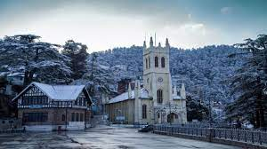
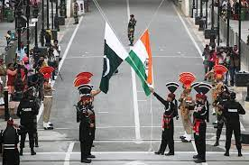

Punjab is a geopolitical, cultural, and historical region in South Asia, specifically in the northern part of the Indian subcontinent, comprising areas of eastern Pakistan and northwestern India. Punjab's capital, largest city, historical and cultural centre is Lahore. The other major cities include Faisalabad, Rawalpindi, Gujranwala, Multan, Ludhiana, Amritsar, Sialkot, Chandigarh, Jalandhar, and Bahawalpur.unjab grew out of the settlements along the five rivers, which served as an important route to the Near East as early as the ancient Indus Valley civilization, dating back to 3000 BCE, and had numerous migrations by the Indo-Aryan peoples. Agriculture has been the major economic feature of the Punjab and has therefore formed the foundation of Punjabi culture, with one's social status being determined by land ownership. In the 18th century, an invasion of Mughal Empire under the ruler Nader Shah caused Mughal authority in Punjab to collapse. Later, the region was invaded by Ahmad Shah Durrani; the founder of the Durrani Empire. The next decades saw a series of Afghan–Sikh Wars and in 1799, the Sikh Empire was formally established under Ranjit Singh with its capital in Lahore. Punjab was conquered by the British EIC in 1849. The region was central to the independence movements of Pakistan and India, with Lahore being the site of both the Declaration of Indian Independence as well as the Lahore Resolution that called for the establishment of a separate state for Indian Muslims. The modern-day Pakistani province has its roots in the Punjab Province of British India, which was divided along religious boundaries by the Radcliffe Line during the partition of India in 1947.
Lahore is the second most populous city in Pakistan after Karachi and 26th most populous city in the world, with a population of over 13 million. It is the capital of the province of Punjab where it is the largest city. Lahore is one of Pakistan's major industrial and economic hubs, with an estimated GDP (PPP) of $84 billion as of 2019. It is the largest city as well as the historic cultural centre and modern day capital of the wider Punjab region, and is one of Pakistan's most socially liberal, progressive, and cosmopolitan cities. It is situated in the north-east of the country, close to the International border with India. Lahore's origins reach into antiquity. The city has been inhabited for at least two millennia, although it rose to prominence in the 10th century.
Islamabad is the capital and ninth-most populous city of Pakistan, with an estimated population of over 1.2 million residents. The city is federally administered by the Pakistani government as part of the Capital Territory. Built as a planned city at the foot of the Margalla Hills in the 1960s, it replaced Rawalpindi as Pakistan's national capital. Islamabad has been notable for its high standards of living, safety, cleanliness, and abundant greenery.
Murree is a mountain resort city, located in the Galyat region of the Pir Panjal Range, within the Muree District of Punjab, Pakistan. It forms the outskirts of the Islamabad-Rawalpindi metropolitan area, and is about 30 km (19 mi) northeast of Islamabad. It has average altitude of 2,291 metres (7,516 ft). The British built this town during their rule to escape the scorching heat in the plains of Punjab during the summer.
Wagah is a village and union council (UC 181) located in the Wahga Zone near Lahore City District, Pakistan. The town is famous for the Wagah border ceremony and also serves as a goods transit terminal and a railway station between Pakistan and India. Wahga is situated 600 metres (2,000 ft) west of the border and lies on the historic Grand Trunk Road between Lahore and Amritsar in India. The border is located 24 kilometres (15 mi) from Lahore and 32 kilometres (2 mi) from Amritsar. It is also 3 kilometres (1.9 mi) from the bordering village of Attari, India. The Wagah ceremony takes place every evening.
